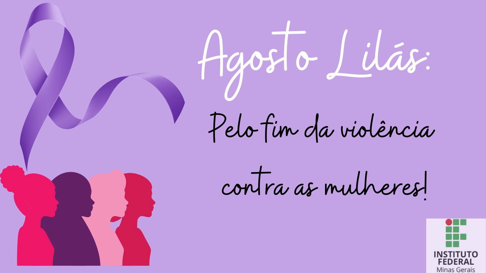

A violência contra a mulher é qualquer ação ou omissão baseada no gênero que lhe cause morte, lesão, sofrimento físico, sexual ou psicológico e dano moral ou patrimonial. Ela pode ocorrer tanto na esfera pública quanto privada, sendo muitas vezes perpetrada por pessoas próximas e de confiança da vítima.
Existem diferentes tipos de violência: física, psicológica, sexual, patrimonial. Todas são graves e causam muitos sofrimento.
Denuncia é um ato de coragem. Se você presenciar ou sofrer violência, procure ajuda.
'' disque 180 - Central de atendimento a mulher, funciana 24 horas, é gratuitos e anônimo.
Campanha do agosto lilas